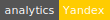
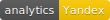

Analytics
Analytics beacon for general purpose.


Installation
git clone git@github.com:gokaygurcan/analytics.git
cd analytics
npm install
npm startShowcase
| Type | Google (svg) | Google (png) | Yandex (svg) | Yandex (png) |
|---|---|---|---|---|
| Flat square |  | |||
| Flat |  | |||
| Plastic | ||||
| Social |
Usage
You can put the beacon in your Readme file to track GitHub statistics:
Or, you can call the pixel via AJAX call or something similar to track some pages/events:
$.ajax({
method: 'GET',
url: 'https://analytics.gokaygurcan.com/UA-XXXXXXXX-X/organization_name/repository_name.gif'
}).done(function(response) {
console.log(response); // this will be a 1x1 pixel image though
});Note: you can use anything you like but using organization_name/repository_name will help you if you want to use more than one repository with only one tracking id.
Examples
You can use either svg or png extension with style querystring. Default is flat-square.
Flat square:
Flat:
Plastic:
Social:

Yandex
You can use either svg or png extension with style querystring. Default is flat-square.
Flat square:
Flat:
Plastic:
Social:

Pixel
You can only use gif extension, no svg or png can be used as a pixel image.
- Pixel:

License
MIT © Gökay Gürcan